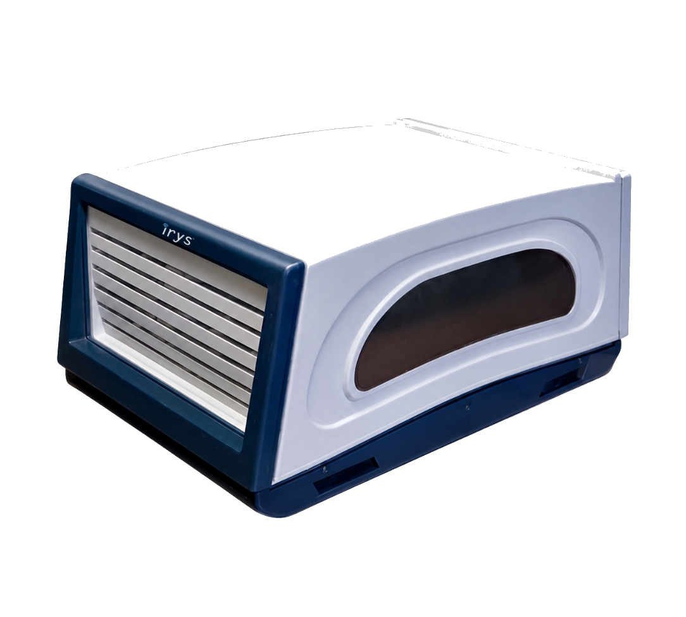

Featured case study
Diarough — RFID across five global locations.
A DTC Sightholder deployed Irys RFID across Mumbai, Antwerp, Hong Kong, New York and Bangkok, integrating printers, scanners and RFID tunnels with SAP.
50,000+ SKUs at rollout5 locations8 months implementation5+ years in operation
Read the case study →
SAP × RFIDCase studies
RFID in real jewellery operations.
Selected stories from the Irys resource library, spanning retail, wholesale, manufacturing and diamond workflows.
CASE STUDY · 01
KD Gold Group — craftsmanship meets RFID efficiency.
Explore story → CASE STUDY · 02Elevating RFID to the “Rolls Royce” of inventory management.
Explore story → CASE STUDY · 03Chandigarh jeweller puts trust in Irys RFID.
Explore story → CASE STUDY · 04DTC Sightholder boosts productivity with Irys RFID.
Explore story → CASE STUDY · 05Singapore retailer transforms stock counting with RFID.
Explore story → CASE STUDY · 06Aurous improves multi-location jewellery tracking.
Explore story →Product data sheets
Technical detail, beautifully organised.
Open the current Irys data sheets for core hardware used in jewellery RFID workflows.

Insights
Thinking beyond stock audit.
Selected articles from Irys on RFID adoption, sales and technology decisions for jewellery businesses.
01ARTICLE
Why adopt RFID?
A practical starting point for understanding where RFID can change jewellery operations.
Read insight → 02ARTICLEUse technology to drive sales.
How technology can support a stronger customer-facing jewellery experience.
Read insight → 03ARTICLEChoose the right solution before you scale.
Consider the operating system behind the business before growth makes change harder.
Read insight →From insight to action